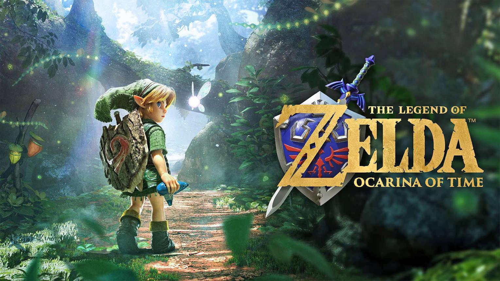
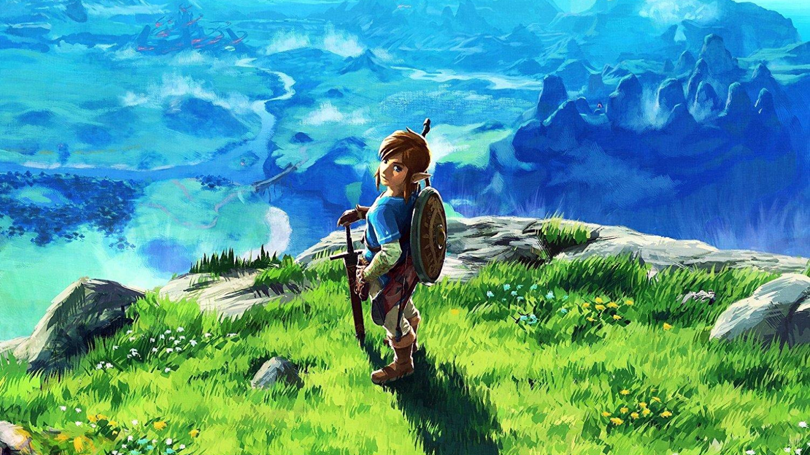
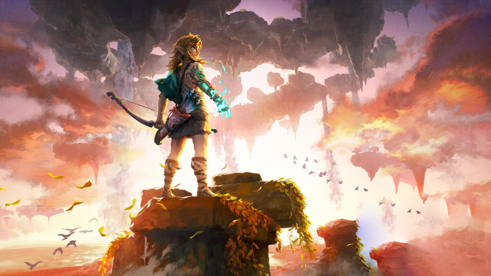
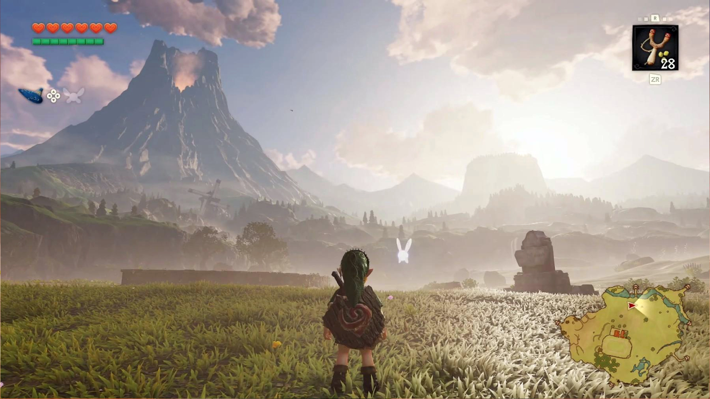
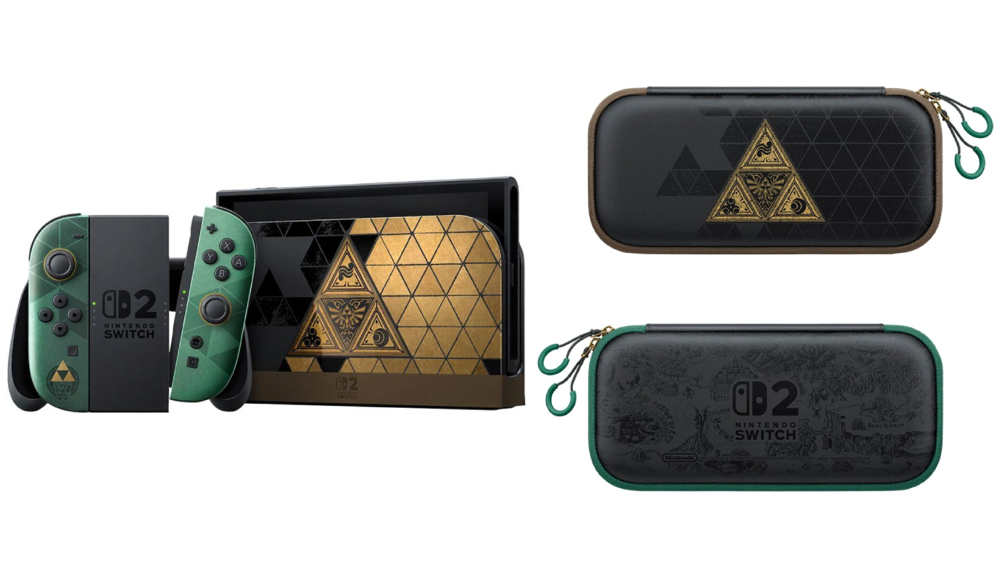
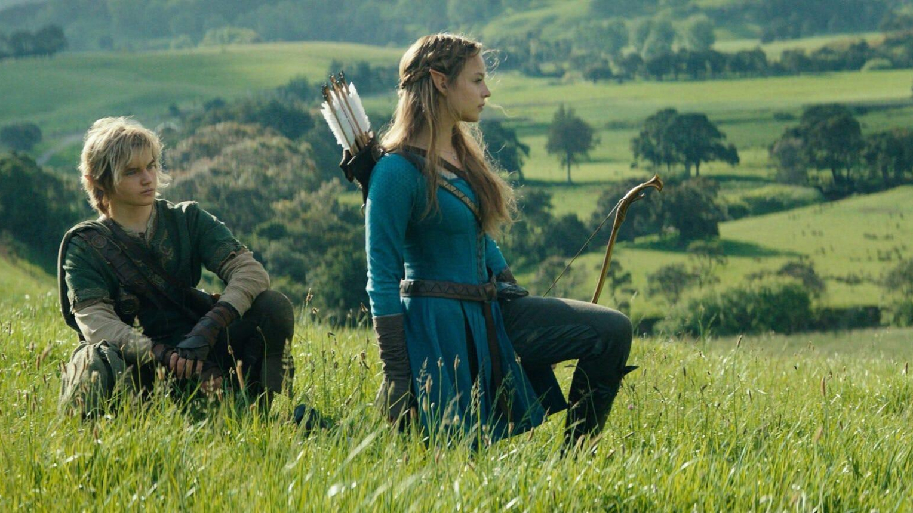

The Legend of Zelda is attracting significant attention from video game fans as Nintendo prepares to release a new version of one of the most influential games in the franchise. The upcoming release of The Legend of Zelda: Ocarina of Time for Nintendo Switch 2, scheduled for November 5, 2026, is a major reason the series is receiving renewed attention.
The announcement comes during an important year for the franchise: 2026 marks 40 years since the original The Legend of Zelda game debuted in Japan in 1986.
Nintendo has also introduced a special 40th Anniversary Edition Nintendo Switch 2 console, announced international concert events and shared additional details about its upcoming live-action Zelda movie.
For longtime fans, these announcements bring back memories of classic adventures. For newer players, they provide an opportunity to discover one of Nintendo's most recognised gaming franchises.
Here is everything you need to know about Zelda's latest announcements, the Ocarina of Time remake, its release date, new features and what Nintendo has planned next.
Why Is Zelda Trending Right Now?
The current interest in Zelda is connected to several major announcements and upcoming releases.
The most immediate development is the November 5 release of Ocarina of Time on Nintendo Switch 2. Nintendo has revealed new gameplay footage showing updated graphics, improved controls, expanded dialogue and other changes to the original adventure.

Other developments include the 40th anniversary of The Legend of Zelda franchise in 2026, the October 29 release of special Zelda-themed Nintendo Switch 2 hardware, and new anniversary editions of the Nintendo Switch 2 Pro Controller and carrying case.
- The 40th anniversary of The Legend of Zelda franchise in 2026.
- The October 29 release of special Zelda-themed Nintendo Switch 2 hardware.
- New anniversary editions of the Nintendo Switch 2 Pro Controller and carrying case.
- A worldwide 40th Anniversary Concert series planned for 2027.
- A live-action Zelda movie scheduled for April 30, 2027.
- New amiibo figures featuring Young Link and Young Zelda planned for 2027.
These announcements have created several reasons for fans to search for Zelda news, release information, trailers and product availability.
What Is The Legend of Zelda?

The Legend of Zelda is one of Nintendo's longest-running and most beloved franchises.
The Legend of Zelda is a long-running action-adventure video game series developed and published by Nintendo.
The franchise follows the adventures of Link, a hero who frequently travels through the fantasy kingdom of Hyrule. Many games involve exploring environments, solving puzzles, discovering hidden locations, fighting enemies and protecting the kingdom from powerful threats.
Princess Zelda is another central character in the series. Although the stories and settings vary between games, the franchise often features familiar elements such as:
Link
The main hero in many games, often wielding the Master Sword.
Princess Zelda
A central character connected to Hyrule and the Triforce.
The Triforce
An important symbol and source of power in the Zelda universe.
Hyrule
The fantasy kingdom featured in many adventures.
Ganon / Ganondorf
A recurring antagonist and one of gaming's most iconic villains.
Master Sword
One of the franchise's most recognisable weapons.
Zelda Celebrates Its 40th Anniversary in 2026
The original The Legend of Zelda game was released in Japan in 1986 for the Family Computer Disk System. Its arrival established the foundation for a franchise that would develop across multiple Nintendo consoles.
Over four decades, Nintendo has introduced new characters, locations, gameplay systems and stories while retaining familiar elements from the original games.
The 40th anniversary celebration announced by Nintendo includes:
- A redesigned anniversary Nintendo Switch 2 system.
- The Ocarina of Time remake.
- New collectible products.
- Special digital cards through the Nintendo Today! app.
- An international concert series.
- Additional experiences at the Nintendo Museum in Kyoto.
Nintendo announced these activities through its September 8, 2026, anniversary presentation.
The Legend of Zelda: Ocarina of Time Remake Release Date

One of the biggest announcements for Zelda fans is the upcoming remake of The Legend of Zelda: Ocarina of Time.
Nintendo confirmed that the game will launch on November 5, 2026, exclusively for Nintendo Switch 2.
The original Ocarina of Time was released in 1998 for the Nintendo 64. It became one of the most influential entries in the franchise and is widely recognised for bringing the Zelda series into a fully 3D adventure.
The new edition revisits Link's classic journey with updated visuals, expanded character dialogue, improved movement and several additional features.
Nintendo describes the remake as a new presentation of the classic adventure using modern technology.
What Is New in Ocarina of Time 2026?
The Switch 2 version introduces several changes intended to make the classic adventure more accessible and immersive.
Overhauled Graphics
Redesigned visuals, improved textures, refreshed sound and a more detailed presentation of Hyrule.
Improved Movement
New button commands to jump and run more freely, plus improved camera control with the Right Stick.
Expanded Dialogue
Characters Link meets have expanded conversations and fully voiced cutscenes.
Threads of Time
A new feature helps players track their adventure, review progress and understand next objectives.
Ocarina Music Recognition
Players can hum melodies near the Switch 2 microphone, allowing Link to play the corresponding tune.
Ocarina of Time 2026 Price and Platform
| Detail | Information |
|---|---|
| Game | The Legend of Zelda: Ocarina of Time |
| Release date | November 5, 2026 |
| Platform | Nintendo Switch 2 |
| Digital edition | $59.99 |
| Physical edition | $69.99 |
| Developer / publisher | Nintendo |
| Game genre | Action-adventure |
The first physical print run will feature special packaging with textured foil cover art, available while supplies last. The release is a Nintendo Switch 2 exclusive, according to the published announcement.
Nintendo Switch 2 Zelda 40th Anniversary Edition
Nintendo also released special hardware to celebrate the franchise's 40th anniversary.

The Zelda 40th Anniversary Edition Nintendo Switch 2 hardware launched on October 29, 2026.
The anniversary edition Nintendo Switch 2 system became available on October 29, 2026. Its design features the Triforce symbol, one of the most recognisable elements associated with the Zelda universe.
The anniversary hardware range includes:
- Nintendo Switch 2 40th Anniversary Edition console.
- Special Zelda-themed Nintendo Switch 2 Pro Controller.
- Pro Controller edition with a display stand.
- Nintendo Switch 2 carrying case with screen protector.
These products are separate from the Ocarina of Time game release. Availability and stock can vary by retailer and region.
The Legend of Zelda Live-Action Movie

Zelda's popularity is also receiving attention because Nintendo is developing a live-action film based on the franchise.
Nintendo officially confirmed the movie's title as The Legend of Zelda and announced a worldwide theatrical release date of April 30, 2027.
The film is being developed by Nintendo, Arad Productions Inc. and Sony Pictures Entertainment.
According to Nintendo, the movie is based on the stories, ideas and concepts developed throughout the franchise's 40-year history.
This is a separate project from the Ocarina of Time video game remake. The two releases should not be confused.
Zelda 40th Anniversary Concerts Around the World
Nintendo has also announced an international concert series featuring music from across The Legend of Zelda franchise.
| Region | City | Planned start |
|---|---|---|
| Japan | Tokyo | January 2027 |
| North America | Chicago | February 2027 |
| Europe | London | April 2027 |
| Australia | Melbourne | May 2027 |
The performances are expected to feature music ranging from classic Zelda themes to soundtracks from more recent games. Fans should consult the official concert website for confirmed venues, dates and ticket information.
What Are the Best Zelda Games to Play?
For newcomers interested in the franchise, several games provide different ways to experience the Zelda universe.
| Game | Platform | What makes it notable |
|---|---|---|
| Ocarina of Time | Nintendo 64 / upcoming Switch 2 edition | Classic 3D Zelda adventure |
| Breath of the Wild | Nintendo Switch / Switch 2 edition | Open-world exploration |
| Tears of the Kingdom | Nintendo Switch / Switch 2 edition | Expanded exploration and creative mechanics |
| Echoes of Wisdom | Nintendo Switch | Zelda takes the leading playable role |
Ocarina of Time is particularly relevant for newcomers interested in the current remake announcement. Breath of the Wild is a strong introduction to the franchise's modern open-world design, while Tears of the Kingdom expands that approach with additional creative gameplay systems.
What Is ZELDA NOTES?
ZELDA NOTES is a companion service available through the Nintendo Switch App for compatible smart devices.
Nintendo has announced additional support for Ocarina of Time as part of the 40th anniversary updates. The features include:
- Today's Record: Review daily adventure progress and statistics.
- Gossip Quest: Use hint images to find locations within the game.
- Play Ocarina: Use a virtual instrument on a compatible smart device.
- Ocarina of Time Quiz: Answer questions from a collection of more than 2,000 questions.
What Happens Next for Zelda in 2026 and 2027?
Nintendo's announced schedule gives fans several upcoming dates to follow.
Zelda 40th Anniversary Switch 2 hardware released.
Ocarina of Time launches on Switch 2. New Nintendo Museum Zelda photo opportunities begin.
Planned Tokyo anniversary concert.
Planned Chicago concert.
Planned London concert.
The Legend of Zelda live-action movie releases worldwide.
Planned Melbourne concert.
LEGO Link & Epona collectible set and electronic Master Sword planned.
Young Link and Young Zelda amiibo figures planned.